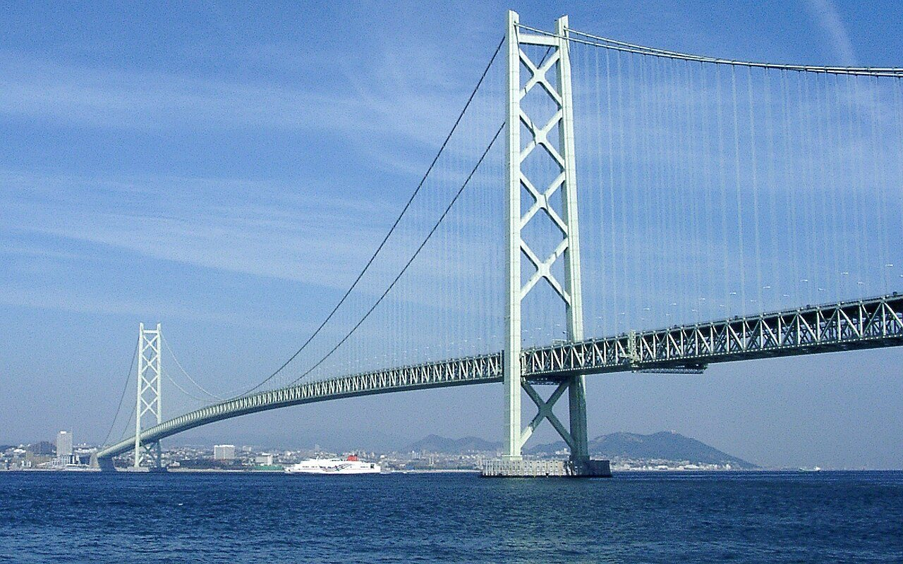
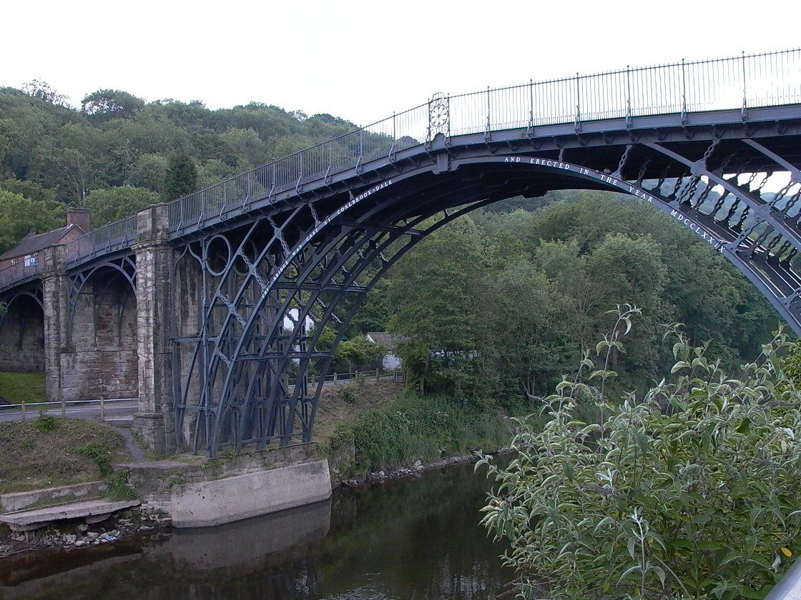
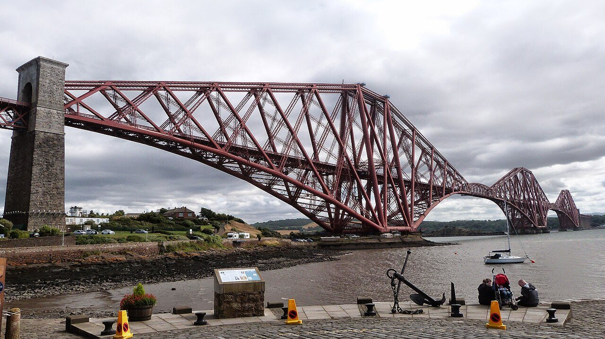
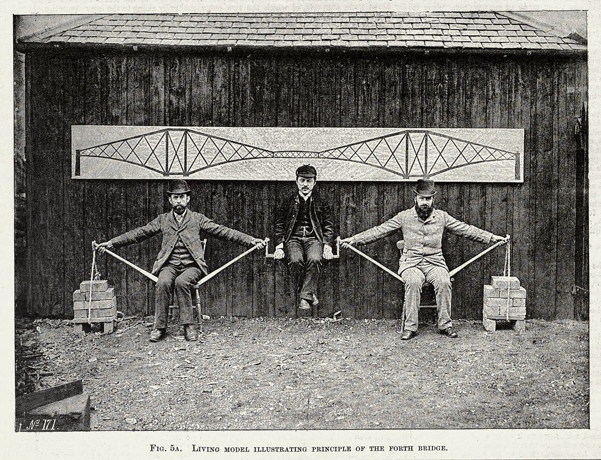
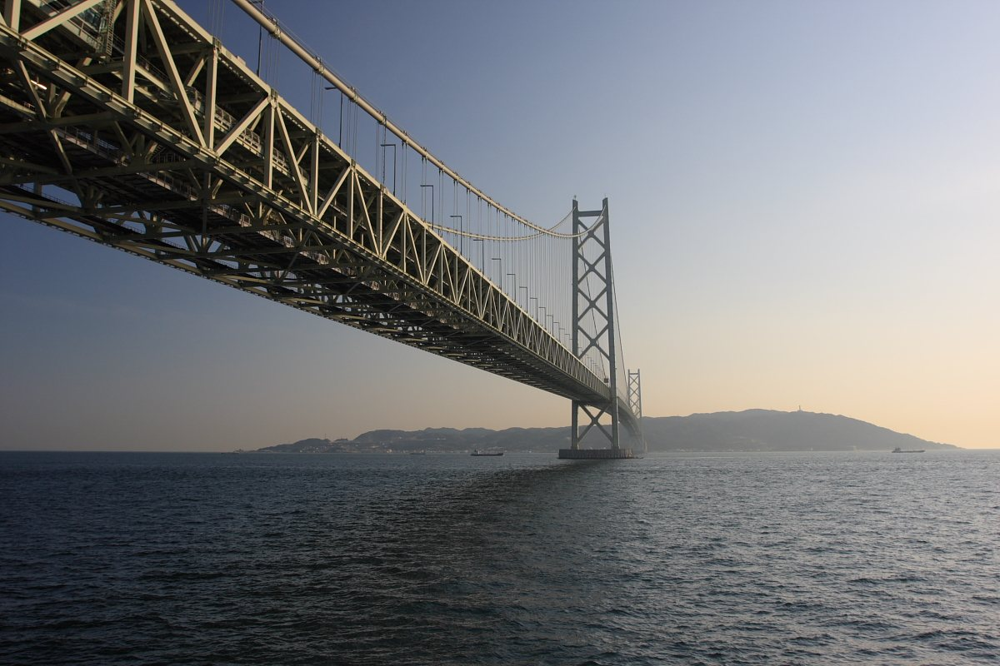
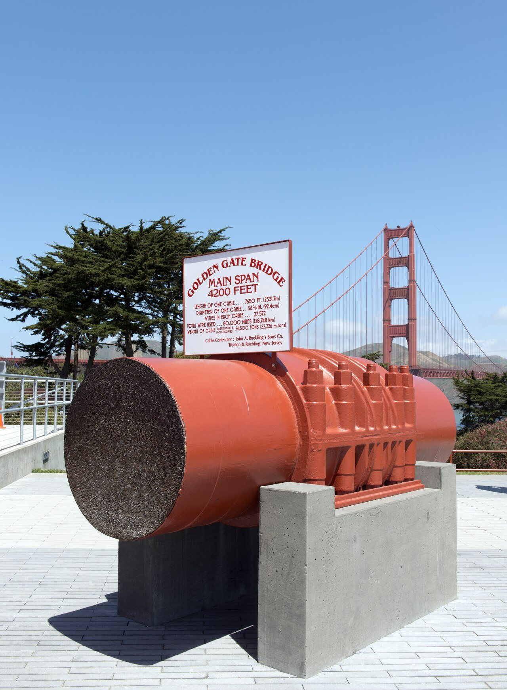
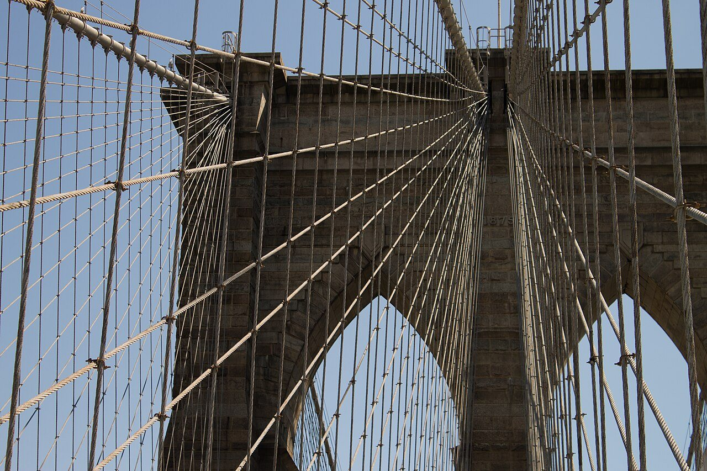
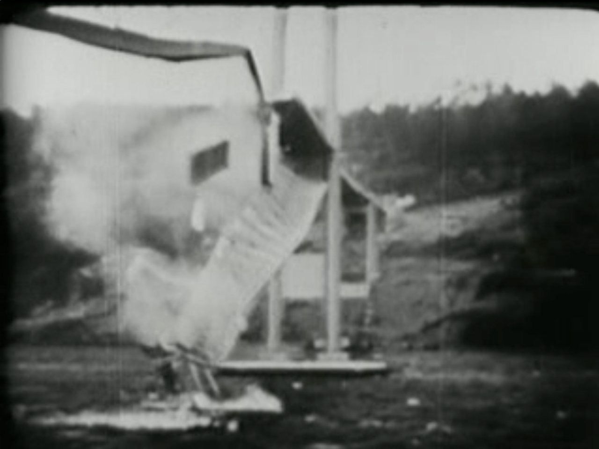

兵庫県の明石海峡、1998年4月5日。神戸と淡路島を結ぶ明石海峡大橋が開通しました。2つの主塔のあいだの長さ（中央支間）は1,991m。開通したとき、吊り橋として世界一の長さでした。
この橋を支える2本の主ケーブルは、それだけで重さ約5万500トンあります。その下には、道路をのせた鉄の桁（けた）が約4kmにわたってぶら下がっています。橋がまず支えなければならないのは、車よりも、自分自身の重さです。それなのに、なぜ大きな橋は自分の重さでつぶれたり、折れたりしないのでしょうか。

ケーブルだけで約5万トン。そんな重さを抱えたまま、大きな橋は何十年も立ち続けます。秘密は、重さを「押す力」と「引く力」に分けて、それぞれ得意な形と材料に受け持たせること。力の通り道を描いた図と写真で、橋の中をのぞいてみませんか。
兵庫県の明石海峡、1998年4月5日。神戸と淡路島を結ぶ明石海峡大橋が開通しました。2つの主塔のあいだの長さ（中央支間）は1,991m。開通したとき、吊り橋として世界一の長さでした。
この橋を支える2本の主ケーブルは、それだけで重さ約5万500トンあります。その下には、道路をのせた鉄の桁（けた）が約4kmにわたってぶら下がっています。橋がまず支えなければならないのは、車よりも、自分自身の重さです。それなのに、なぜ大きな橋は自分の重さでつぶれたり、折れたりしないのでしょうか。
重さを「押す力」と「引く力」に分けて、それぞれ得意な形と材料に受け持たせ、最後は地面へ流しているから。
重さが橋にかかると、部材（橋を組み立てている一つひとつの部品）には2種類の力が生まれます。押し縮める「圧縮」と、引きのばす「引張（ひっぱり）」です。
いちばん簡単な橋、川に板を1枚わたした「桁橋（けたばし）」で考えてみましょう。真ん中に重さがかかると、板は少したわみます。このとき板の上側は押し縮められ、下側は引きのばされています。1枚の板の中で、圧縮と引張が同時に起きているのです。
やっかいなのは、材料によって得意な力がちがうことです。石やコンクリートは押されるのには強いのに、引っぱられるとずっと弱い。だから鉄筋コンクリートでは、引っぱられる側に鉄の棒（鉄筋）を入れて、引張を受け持たせています。
鉄も種類によって性格がちがいます。昔の「鋳鉄（ちゅうてつ）」は、押す力には強くても、もろくて引っぱりには弱い材料でした。そこで人々は、材料に合わせて橋の形そのもので、かかる力を選ぶことを考えました。

アーチ橋は、上からの重さを弧にそって流し、部材全体をほぼ「押される」だけの状態にします。引っぱりに弱い石でも、古代から大きな橋がつくれたのはこのためです。ただし両はしでは、アーチが外へ開こうとする力をがっしり受け止める必要があります。
鉄骨を三角形に組む「トラス」は、細い部材の一本一本が、押されるか引かれるかのどちらかを受け持つ形です。三角形は、つなぎ目がくるりと回れるようになっていても、形が変わりません。だから太い板を1枚わたすより、ずっと少ない材料で長い距離をわたれるのです。
吊り橋や、塔から斜めのケーブルで桁を直接つる「斜張橋（しゃちょうきょう）」は、引っぱる力に強いケーブルを使う形です。
1890年に開通したスコットランドのフォース橋は、トラスを使った「カンチレバー橋（片持ち梁の橋）」です。土台から左右へ腕をのばし、その先に短い桁をのせて、2つの主な区間をそれぞれ約520mでわたりました。
設計した技師たちは、そのしくみを人間で見せました。1887年ごろ、真ん中の人を2人がいすに座って支える「人間の模型」です。2人の腕は引っぱられ、腕から下へのびる棒は押され、両はしに積んだレンガが重しの役をしています。


何kmもの海をわたる橋で使われるのが吊り橋です。道路の重さは細い吊り材（ハンガー）を通って主ケーブルにかかり、橋にかかる重さは、ほとんどがケーブルを引っぱる力に変わります。その力は、塔を上から押し下げる力と、両はしの「アンカレイジ」という巨大なおもりを引く力になって、最後は地面へ流れます。
引っぱる力に強い材料の代表が、細い鋼（はがね）の線です。それを束ねたケーブルを使う吊り橋は、ほかのどの形よりも長い区間をわたせます。
明石海峡大橋の主ケーブルは直径約1.1m。直径約5mmの鋼の線を127本束ねたものを、さらに290束まとめています。線は1mm²あたり約180kgの重さに耐える強さで、それまでの瀬戸大橋のケーブルより強くなりました。そのおかげで、片側に2本必要だったケーブルを1本に減らし、そのぶん橋を軽くできたといいます。
強い材料を使うと、橋そのものが軽くなり、支えるべき重さも減ります。長い橋では、これがとくに効きます。1914年、のちにシドニー・ハーバーブリッジを手がける技師ブラッドフィールドは、当時の鉄道橋の計算をもとに、長い橋では部材にかかる力の半分以上が橋自身の重さによるもので、短い橋では逆に、列車などの重さが8割を超えることもあると書いています。



重さを支えるだけでは、橋は完成しません。1940年7月1日、アメリカ・ワシントン州で開通したタコマナローズ橋は、中央の長さ853mの吊り橋でした。桁は細く、深さは約2.4mしかありません。風が吹くとよく揺れることから、工事の人たちに「ギャロッピング・ガーティー（はね回るガーティー）」とあだ名をつけられていました。
開通から約4か月後の11月7日、時速約64kmの風の中で、桁は大きくねじれるように揺れ始め、ついに崩れ落ちました。原因は、風と橋の揺れがおたがいを強め合う「フラッター」という現象だったと考えられています。人の死者は出ませんでした。

この事故のあと、橋の設計では模型に風を当てる「風洞（ふうどう）実験」が欠かせなくなりました。明石海峡大橋でも100分の1の模型で実験をくり返し、秒速約80mの風にも耐えるようにつくられています。桁は風を通しやすいトラスで組まれ、塔の中には揺れを打ち消す振り子の装置が入っています。
明石海峡大橋の、2つの主塔のあいだの長さ（中央支間）1998年開通。全長は3,911m
2本の主ケーブルに使われた鋼の線を、つないだ長さ地球を7周半するほど
ケーブルの線が、断面1mm²あたりで耐えられる重さとても強い鋼の線。瀬戸大橋のケーブルは約160kg
1995年1月17日、阪神・淡路大震災が起き、6,000人を超える人の命が失われました。震源は明石海峡付近の地下です。このとき明石海峡大橋は、主塔が立ち、ケーブルを張り渡した直後でした。
地震で2つの主塔の土台は地面ごと動き、両はしのアンカレイジの間は約1.1m広がりました。調べてみると、塔にもケーブルにも、使えなくなるような傷はありませんでした。そこで、まだつくっていなかった桁の長さを調整して工事を続けました。こうして中央の長さは約1m延び、1,991mになったのです。
建設中の主塔とケーブルは、地面ごと動かされても、大きな傷なく持ちこたえました。次に大きな橋を渡ったら、頭の上のケーブルと、それを押さえる両はしの大きなかたまりを探してみてください。重さの通り道が見えてくるはずです。